Godot 2D Platformer - level 4, Game scene og start på Player
I level 3 fik vi startet på at tegne vores level, så vi endelig kunne se noget på skærmen efter alt vores hårde arbejde!
I denne lektion vil vi lave en Game scene som vi kan
bruge til at holde styr på:
- Levels
- Player
- UI
Præcis som vi gjorde i vores 2D skydespil. Derudover starter vi også
på vores Player scene.
Gruppering
Indenfor programmering handler det meget om at bryde ting ned i små logiske bidder og sørge for at ting grupperet pænt, sådan at man ikke prøver at gøre alt muligt i den samme blok kode som så bliver kæmpestor og svær at holde styr på.
Det er også det vi gør her. Vi har en Game scene som
ikke kan ret meget selv, men som så til gengæld indeholder
- vores
Level01fra før, som ved hvordan man skal tegne et map - en
Playerscene som kan finde ud af at tegne og flytte vores helt - senere noget UI så vi kan se hvor mange point vi har og så videre
Vores Game scene skal i første omgang indeholde:
Level01som tilføjes som en child node, ganske som vi gjorde i vores 2D space shooter- en
Playersom vi laver lige om lidt
Lad os komme i gang.
Opret ny Node2D
- Lav en ny 2D scene af typen
Node2Dog kald den "Game" - Gem din scene under navnet "Game.tscn" i roden af scenes mappen
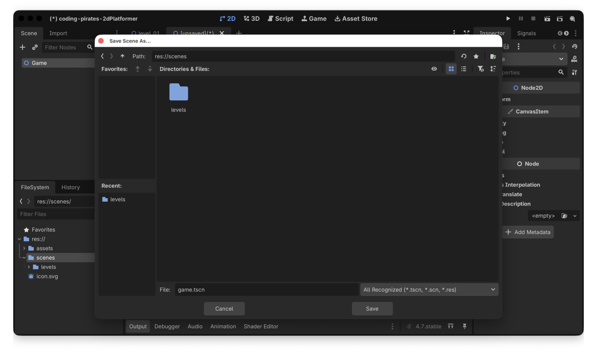
Det skulle gerne se sådan her ud i din "FileSystem" explorer i nederste venstre hjørne af Godot vinduet.
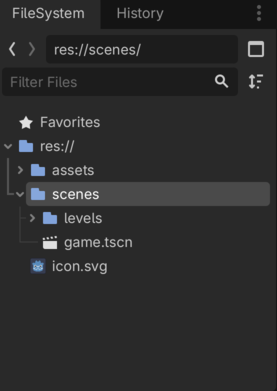
Tilføj Level01 som child node
Du kan godt huske hvordan ikke?
- Marker din nye Game node
- Tryk på "Instantiate Child Scene", kæden lige over din Game node
Vælg nu din "Level01.tscn" scene. Det skulle nu gerne se sådan her ud
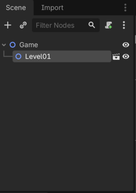
Test
Nu kan du trykke på "Run Project" (play knappen øverst).
Godot vil komme og fortælle dig høfligt at du har glemt at vælge en "main scene" som er den man som default vil kører når spillet starter.
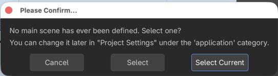
Her kan du bare vælge "Select Current"
(og hvis du nogensinde vil ændre det, så er det under Project Settings -> Application -> Run -> Main Scene)
Og nu skulle du gerne kunne se din Game scene, som
indtil videre bare er det samme som Level01
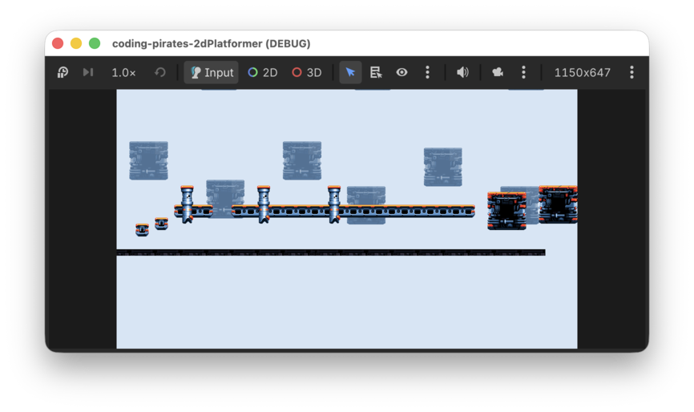
Altså...det er jo stadig ikke kønt men der er da noget på skærmen.
Lad os komme videre med at få lavet en Player
Player
Til vores Player vil vi gerne bruge en
CharacterBody2D scene.
Som der står i dokumentationen:
CharacterBody2D is a specialized class for physics bodies that are meant to be user-controlled. They are not affected by physics at all, but they affect other physics bodies in their path.
Hallo mand! Det er jo lige det vi vil.
Så vi vil nu:
Lad os komme i gang
Opret Player node
Du har gjort det her mange gange før så nu får du det bare i punktform og så klarer du den derfra.
- Opret ny scene af type
CharacterBody2D - Omdøb den til Player
- Opret en ny mappe i roden af res mappen (altså på nivau med vores "assets" og "scenes" mapper). Kald mappen "characters" (her vil vi gemme vores Player og senere fjender)
- Gem vores nye scene som "player.tscn"
- Tilføj en
CollisionShape2Dsom sub-node du kan bruge en CapsuleShape - Tilføj en
AnimatedSprite2Dsom sub-node
Vi streger ud
Og så skal vi lige have nogle assets også.
- Opret en ny undermappe under assets og kald den "characters"
- Kopier "space-marine-idle.png" fra assets som du tidligere hentede ind i den nyeoprettede "characters" mappe
Nu kan du oprette nye SpriteFrames på din
AnimatedSprite2Di "Inspectoren" i højre side
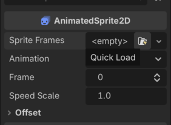
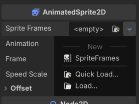
Og endelig kan du oprette en ny animation som du har gjort før.
- Klik på den
SpriteFramesdu lige har oprettet - Nu kan du i bunden vælge "SpriteTrames"
- Omdøb den animation der allerede er til at hedde "idle"
- Klik på "ADd Frames from Sprite-Sheet" i topmenuen af "SpriteFrames" (den der ligner en Rubrics Cube eller vaffel eller hvad det nu er)
- Tilføj nu "space-marine-idle.png" og ret Vertical til
- Vælg alle 4 frames og tryk på "Add 4 Frame(s)"
- Husk at slå "Autoplay on Load" til
- Tada
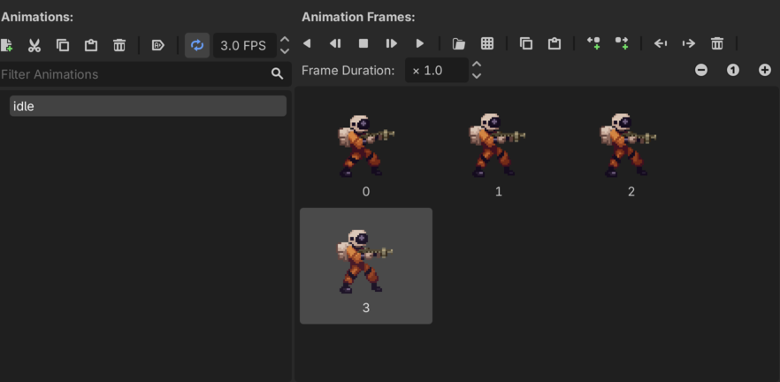
Vi kan sætte flueen ved sidste punkt
Tilføj Player til Game
Præcis som vi tilføjede Level01 til Game
vil vi nu tilføje Player som en Child Scene.
Zoom lidt ind og skift til Move Mode så vi kan flytte vores
Player inde i Game
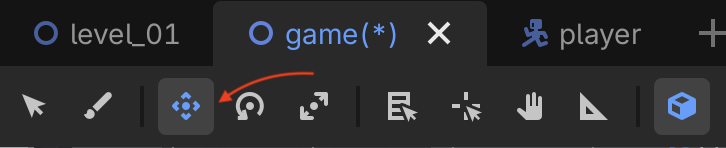
Flyt Player så den står nede ved gulvet, det behøver
ikke være helt præcist, det klarer vi om lidt.
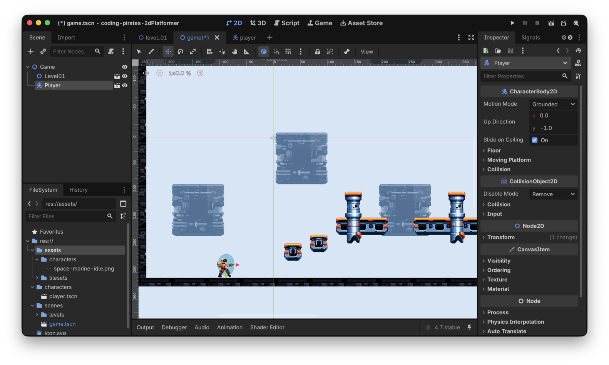
Kør vores spil igen
What the...
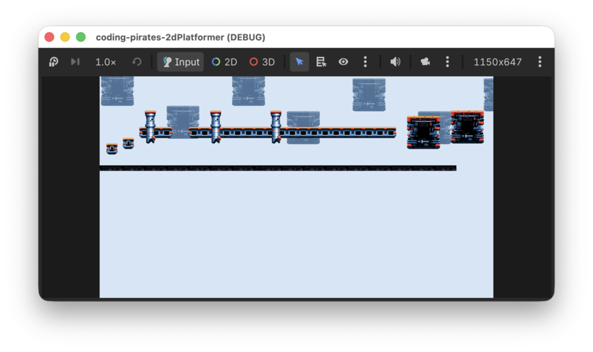
OK det er fesent! Vi kan jo intet se. Hvis bare der var noget vi kunne gøre ved det...
Camera2D
Jamen vi kan jo gøre noget ved det. Vi kan tilføje et
Camera2D til vores Player og så vil det sørge
for at følge vores Player rundt. Du kan læse mere om
Camera2D i dokumentationen.
Så:
- Ind på vores
Playerscene igen og tilføj etCaeera2Dsom en child node - Sæt zoom level til 4 i "Inspectoren" i højre side
Det ser sådan her ud
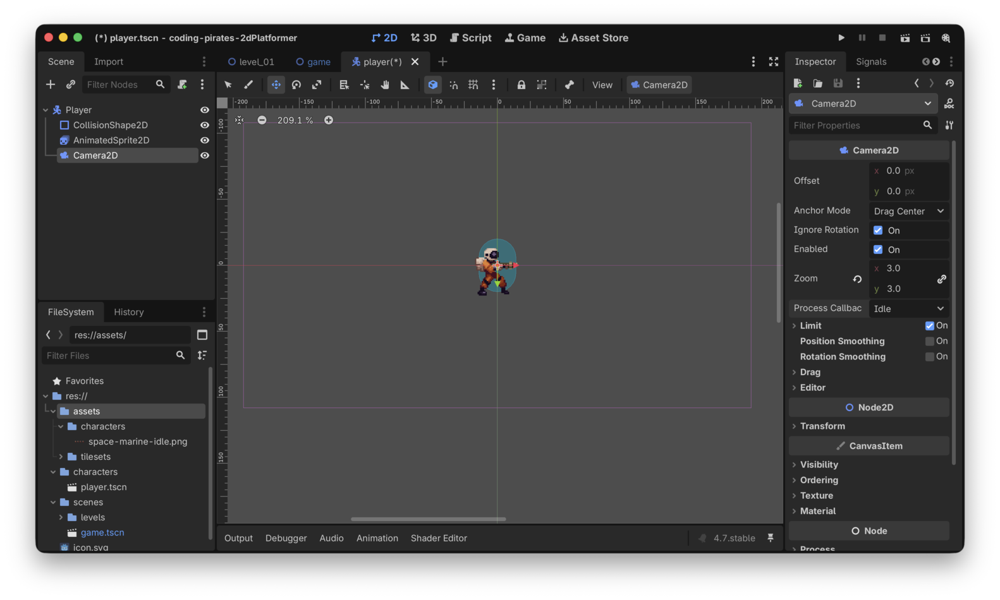
Kør vores spil igen...Jaeh ja! Se nu bare!
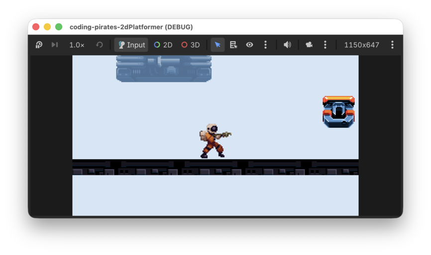
Nu er der zoomet ind på vores Player som står og
animerer lige så fint.
Den svæver godtnok lidt over jorden men det klarer vi i næste lektion.
Godt arbejde
Nu begynder det at ligne noget. Vi har et Game som har
en Level01 og vi har også en Player som vi kan
se.
I level 5 vil vi begynde at tilføje
scripts til vores Player så den følger tyngdeloven. Vi vil
lave nogle "komponenter" som vi kan bruge sammen med vores scenes sådan
at vi kan bruge det samme kode flere steder, det bliver godt! Vi ses i
level 5.